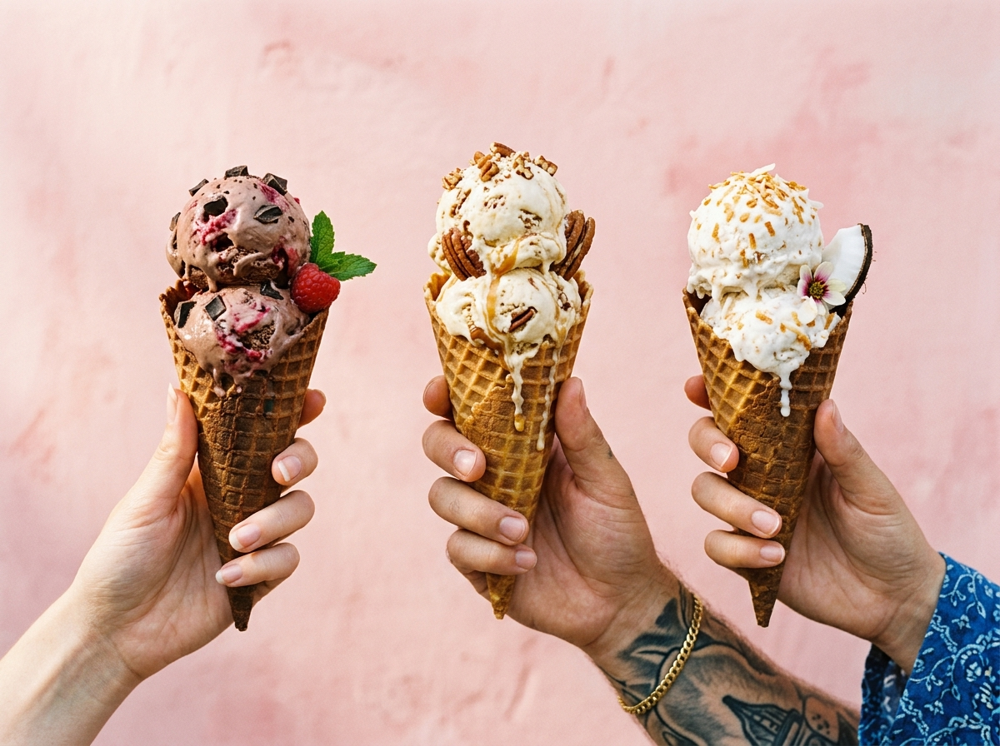
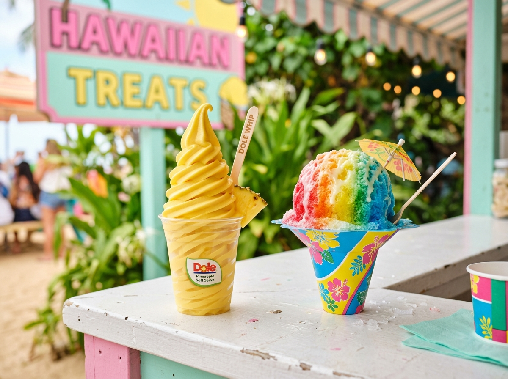
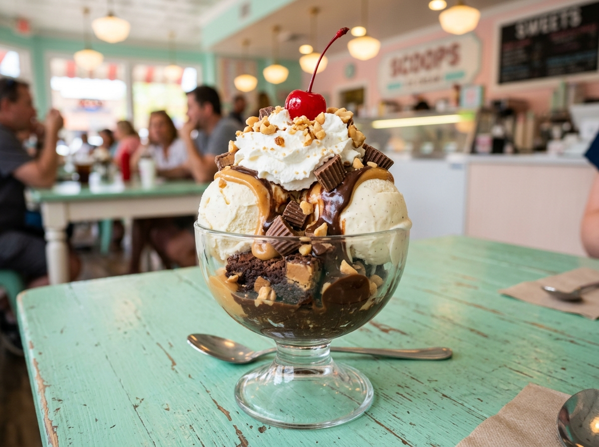

Twenty-four flavors in the case, thirty-some toppings on the wall, and one very good decision ahead of you.
24 rotating flavors of Hershey's hand-dipped ice cream — four sizes, cup or cone. The lineup changes through the season, so there's always a new favorite waiting.
Recently spotted in the case:


Sample menu for demonstration — flavors rotate and prices are representative. For today's case, check Facebook or call (260) 580-3475.